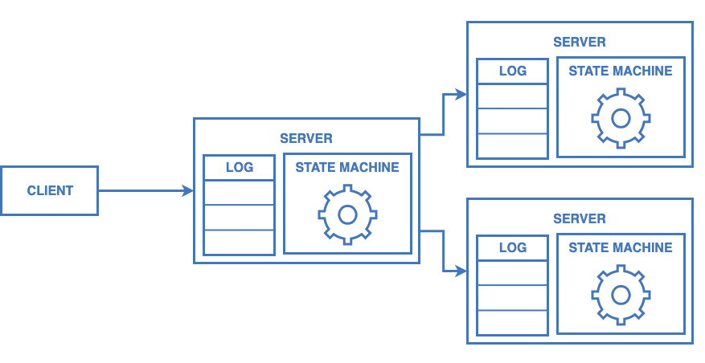

RAFT

RAFT, sunucular arasında uzlaşma(concensus) sağlayan bir algoritmadır.
RAFT sayesinde dağıtık bir sistem, sunucuların yarısından fazlası ayakta kaldığı sürece, normal bir şekilde hizmet verebilir.
Uzlaşma(Consensus)
Dağıtık bir sistemde, tüm sunucuların aynı verilere sahip olduğundan emin olmasıdır. Uzlaşma algoritmaları sunucuların çoğunluğu hizmet verebildiği sürece ilerlemeye devam edebilir. Örneğin; 5 sunucuya sahip bir sistem, sunucuların 2si çökse dahi normal bir şekilde hizmet verebilir.
Uzlaşma algoritmalarının hataya tölere şekilde çalışması genellikle çoğaltılmış durum makineleri(replicated state machine) ile sağlanır. Çoğaltılmış durum makinelerinde, her sunucunun bir durum makinesi ve makineye gelen komutları kaydettiği bir logu olur. Buradaki amaç durum makinesini hataya tölere etmektir.
Hata töleransı (fault-tolerance): Sistemin, bazı parçaları hata verse bile düzgün bir şekilde hizmet verebilmesidir.
Durum makineleri ve komut kayıtları RAFT gibi bir sistemle çoğaltılarak istemciye(client) güvenli tek bir durum makinesinde komut çalıştırılıyormuş gibi gösterilebilir.
Örnek
Sistemin çalışma yapısını bir örnekle açıklayalım.
Elimizde sisteme veri ekleyebildiğimiz bir durum makinesi olsun.
Client bu durum makinesine bir key ile veri ekleme(add) komutu gönderebilir.
state_machine = StateMachine() state_machine.apply('add', 'total', 2020)
Bu durum makinesini çoğaltığımız zaman birbirleri ile her zaman senkronize olmasını sağlamamız gerekiyor.
Bunun için durum makinelerine bir komut geldiğinde;
- önce bu komutu kalıcı bir şekilde sunucuda depolamalı,
- ardından komutu diğer durum makinelerine dağıtmalı
- ve bunun sonunda tüm durum makinelerinde komutu çalıştırmalıyız.

Bütün sunucular her zaman aynı durum makinesine ve loga sahip olacağı için, herhangi bir zamanda lider(istek alan sunucu) çökerse kalan 2 sunucudan birisini lider olarak seçebiliriz.
Google File System, HDFS, RAMCloud gibi large-scale sistemler olası sunucu çökmelerinde sistemi ayakta tutabilmek için; çoğaltılmış durum makinelerini kullanarak lider seçimlerini yönetmekte ve konfigürasyon bilgilerini kaydetmektedir.
RAFT Uzlaşma Mekanizması
Bir istemci lider sunucuya komut gönderdiğinde, lider bu komutu kendi ve diğer takipçi sunucuların loglarına ekler ve komutun çalıştırılmaya uygun olduğuna karar verdiğinde tüm sunucuların durum makinelerine gönderir.
Sunucu Rolleri
RAFT algoritmasında uzlaşma aşaması öncelikle bir Lider(Leader) seçilerek başlar. Seçilen lider çoğaltılmış logların yönetilmesinden sorumludur.
Sistemde bütün sunucular Takipçi(Follower) durumunda başlar.
Liderden bir süre mesaj alamadığı zaman takipçiler Aday(Candidate) durumuna geçer ve seçim başlatırlar. Oy çoğunluğuna sahip aday sunucu Lider olur ve diğer sunuculara yaşam(heartbeat) mesajları göndererek liderliğini belirtir.
Liderden mesaj alan Aday sunucular Takipçi durumuna geri dönerler.
Liderin çöktüğü ve yeni bir liderin seçildiği durumda eğer eski lider yeniden ayağa kalkarsa, sistemde karışıklık olmaması için RAFT eski lideri bilgilendirir ve takipçi durumuna döndürür.

Çalışma Dönemleri
Sunucuların durumlarını kontrol altında tutmak için RAFT zamanı dönemlere(term) böler. Dönemler artan sayılar şeklinde belirlenir.
Dönemler seçimlerle birlikte değişir ve lider seçildiği dönem boyunca liderliğine devam eder.
Seçimlerde birden fazla sunucu en fazla oyu alırsa o dönem lider seçilmeden biter ve yeniden seçim başlatılarak yeni bir döneme geçilir.
Her sunucu o anki dönemini kayıtlı tutar ve bir sunucuyla haberleşirken paylaşır. Eğer bir sunucu daha yeni bir dönem numarasına sahip mesaj alırsa kendini yeni dönemle günceller. Eğer bu sunucu Aday veya Liderse doğrudan Takipçi durumuna geçer.
Eğer eski bir döneme ait mesaj alınırsa bu mesaj reddedilir.
Rollerin Görevleri
Ortak Görevler
Tüm sunucular;
- Yeni bir log commit edilmişse bir sonraki komutu durum makinesinde çalıştırır.
- RPC isteğinde veya cevabındaki dönem değeri sunucunun döneminden büyükse, sunucu dönemini günceller ve Follower durumuna geçer.
Follower
- Liderden ve Adaylardan gelen tüm RPClere cevap verir.
- Beklenen süre içerisinde Liderden AppendEntries isteği gelmezse veya bir sunucuya oy vermezse Aday konumuna geçer.
Candidate
- Aday konumuna geçildiğinde seçim başlatır.
- Güncel dönemi bir artırır.
- Kendine oy verir.
- Seçim sayacını resetler.
- Diğer tüm sunuculara RequestVote göndererek oy ister.
- Sunucuların çoğundan oy alırsa Lider konumuna geçer.
- Eğer yeni Liderden AppendEntries mesajı gelirse Takipçi konumuna geçer.
- Eğer seçim sayacı biterse; yeni seçim başlatır.
Leader
- Seçim süresinde her bir sunucuya boş AppendEntries(heartbeat) mesajı gönder ve yeni bir seçim başlamaması için kısa aralıklarla sürekli tekrar et.
- İstemciden komut gelirse; lokal loga kaydını ekle. Durum makinesine komut uygulandığında istemciye cevap ver.
- Her takipçi için; loglara yeni kayıt eklenmişse takipçinin son log indeksinden
itibaren bütün yeni kayıtları AppendEntries isteği ile gönder.
- Başarılı bir şekilde Takipçiye kayıtlar eklenirse; Takipçinin
nextIndexvematchIndexbilgilerini güncelle. - Kayıtlar eklenemezse; Log kayıtları uyuşmadığı için kayıtlar oluşturulamamıştır.
nextIndexdeğerini bir azalt ve tekrar dene.
- Başarılı bir şekilde Takipçiye kayıtlar eklenirse; Takipçinin
- Loglarda
commitIndexten ve Takipçilerin çoğunluğununmatchIndexinden daha büyük indekse sahip bir kayıt varsa ve bu kaydın dönemi güncel döneme eşitsecommitIndexi bu kaydın indeksi ile güncelle.
Haberleşme
RAFT sunucuları RPC protokolü ile haberleşir ve temel uzlaşım algoritmasını kurgulamak için sadece 2 tür RPC mesajı yeterlidir.
RequestVote adaylar tarafından, seçim sırasında diğer sunuculardan oy istemek için kullanılır.
message RequestVote { // Adaya ait dönem numarası int32 term = 1; // Aday numarası int32 candidateId = 2; // Adayın en son logladığı komutun indexi int32 lastLogIndex = 3; // Adayın en son logladığı komutun dönemi int32 lastLogTerm = 4; } message RequestVoteReply { // Oy istenen sunucunun dönem numarası int32 term = 1; // Aday oy alması durumunda True olur bool voteGranted = 2; }
AppendEntries lider tarafından log paylaşmak ve diğer sunuculara lider olduğunu belirtmek için kullanılır.
message Entry { // Log kaydının girildiği dönem int32 term = 1; // Loglanan komut int32 command = 2; } message AppendEntries { // Lidere ait dönem numarası int32 term = 1; // Liderin idsi, takipçiye gelen bağlantıyı lidere yönlendirmek için int32 leaderId = 2; // Yeni kayıtlardan önceki son kaydın indeksi int32 prevLogIndex = 3; // prevLogIndexdeki kaydın dönem numarası int32 prevLogTerm = 4; // Kaydedilecek log girdileri. Heartbeat mesajları için boş gönderilir. repeated Entry entries = 5; // Liderin commitlediği son kaydın indeksi. int32 leaderCommit = 6; } message AppendEntriesReply { // Takipçinin o anki güncel dönemi int32 term = 1; // Eğer başarılı bir şekilde kayıtlar eklendiyse //(prevLogIndex ve prevLogTerm değerleri eşleşiyorsa) True bool success = 2; }
Sunucularda Saklanan Bilgiler
RAFT sunucularında tutulan bilgileri 3 kategoriye ayırabiliriz.
Tüm Sunucularda Kalıcı Olarak Saklanan Bilgiler
Bu bilgiler, her RPC cevabından önce sabit diskte güncellenir.
- currentTerm: Sunucunun en güncel dönemi.
0dan başlayıp monoton olarak artar. - votedFor: Dönem için sunucunun oy verdiği Adayın idsi.
- log[]: Komut kayıtları. Durum makinesinde için oluşturulan komutları ve komutları kaydeden liderin dönemini içerir.
Tüm Sunucularda Değişken Bilgiler
- commitIndex: Bilinen en son commit edilmiş log kaydının indeksi.
0dan başlayıp monoton olarak artar. - lastApplied: En son uygulanan komutun log indeksi.
0dan başlayıp monoton olarak artar.
Lidere Özgü Bilgiler
Bu bilgiler her seçimden sonra yeniden tanımlanır.
- nextIndex[]: Her sunucunun bir sonraki kaydı tutacağı log indeksi.
- matchIndex[]: Her sunucunun kopyasını tutacağı bilinen en sonuncu kaydın indeksi.
0dan başlayıp monoton olarak artar.
class State: log: List[Entry] currentTerm: int votedFor: int commitIndex: int lastApplied: int ... class Leader(State): nextIndex: List[int] matchIndex: List[int] ... class Candidate(State): ... class Follower(State): ...